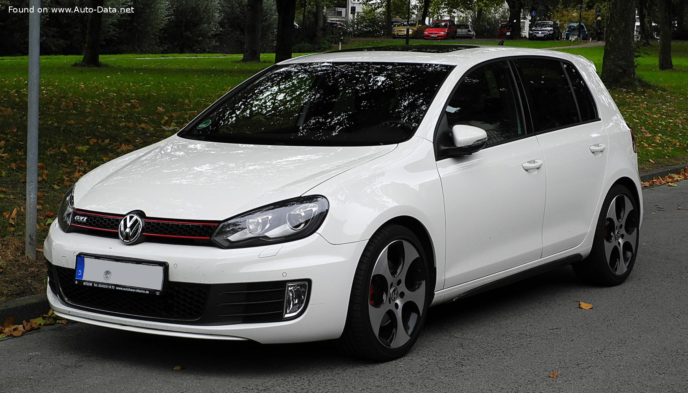

VW GTI MK6 (2022)
The Volkswagen Golf (Mk8) (also known as the Golf VIII) is a compact car, the eighth generation of the Volkswagen Golf and the successor to the Volkswagen Golf Mk7. It was launched in Wolfsburg on 24 October 2019, and arrived in German showrooms in December 2019.
Manufacturer: Volkswagen- Production: 2019 - present
- Assembly: Germany China
- Designer: Klaus Zyciora
- Colors Available: Grey, Black, White, Blue
- Price: R 30,000 (Payment over 24 months available)